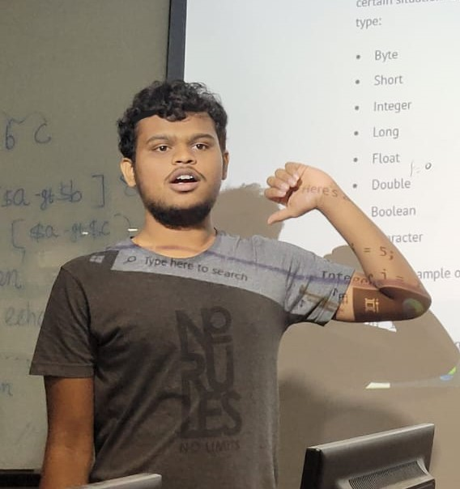

I'm Smit Patel from Halol, deeply driven by my career aspirations. I have a natural aptitude for problem-solving, making me an ideal candidate for pursuing a Ph.D. My interests span a wide spectrum, from animation, AI, and ML to my hobbies of chess and anime.
In terms of technical skills, I'm proficient in Java, C++, C, HTML, JavaScript, and SQL. These skills empower me to craft interactive web content, analyze data, and explore the exciting realms of AI and ML. My insatiable curiosity fuels my quest for knowledge, making my career journey an exciting and promising one.